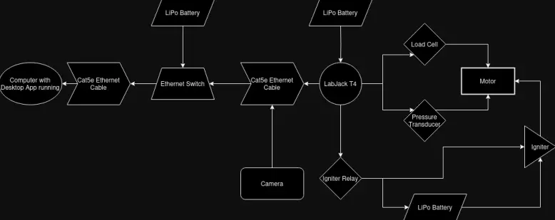
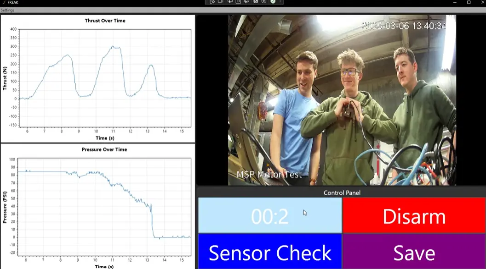
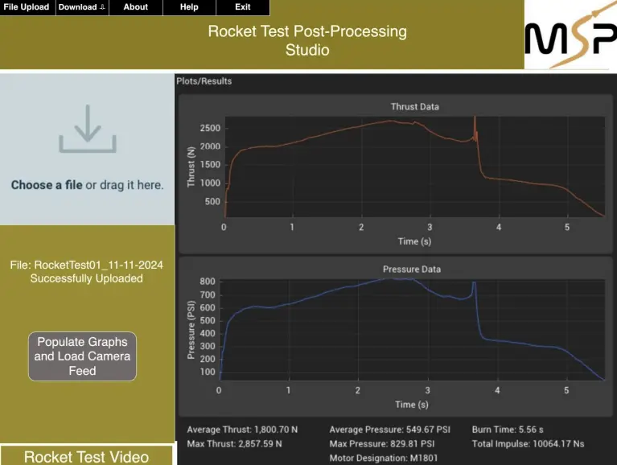

<section class="py-20 bg-white dark:bg-gray-900">
  <div class="max-w-6xl mx-auto px-6">
    <h1 class="text-4xl md:text-5xl font-bold text-center mb-12 text-gray-900 dark:text-gray-100 tracking-tight">
      Project FREAK: Field-Ready Rocket Evaluation and Analytics Kit
    </h1>

    <!-- Overview Section -->
    <div class="bg-gray-50 dark:bg-gray-800/60 backdrop-blur-sm rounded-xl p-6 border border-gray-200 dark:border-gray-600 mb-8">
      <h2 class="text-2xl font-mono text-emerald-600 dark:text-emerald-400 mb-4">Overview</h2>
      <p class="text-gray-900 dark:text-gray-100 mb-4">
        Developed for the Mizzou Space Program (MSP), FREAK is a robust Windows desktop application that captures and analyzes live data during static fire tests of solid rocket motors. It replaces an outdated, manual system reliant on USB data transfer and no real-time monitoring. The app integrates with a LabJack T4 DAQ for sensor data (thrust via load cell, pressure via transducer), supports real-time graphing, live Ethernet camera feeds, safe motor ignition, and data export in JSON/MP4 for post-test analysis via FREAKalyze (a Python GUI).
      </p>
      <p class="text-gray-900 dark:text-gray-100">
        Key goals: Provide MSP with intuitive visualization tools for informed decision-making, enable remote monitoring from 500+ feet for safety, automate data storage/formatting, and optimize rocket performance while adhering to regulations like ITAR.
      </p>
      
    </div>

    <!-- My Role Section -->
    <div class="bg-gray-50 dark:bg-gray-800/60 backdrop-blur-sm rounded-xl p-6 border border-gray-200 dark:border-gray-600 mb-8">
      <h2 class="text-2xl font-mono text-emerald-600 dark:text-emerald-400 mb-4">My Role</h2>
      <p class="text-gray-900 dark:text-gray-100 mb-4">
        As Backend Developer, I helped lead the implementation of the application's backend logic in C#/.NET, including data processing, multithreading for efficient real-time handling, and integration with the LabJack LJM API for sensor communication. I also played a pivotal role in project planning, defining Agile sprints, managing tasks via JIRA and Github, and coordinating bi-weekly stand-ups and retrospectives.
      </p>
      <ul class="space-y-2 text-sm text-gray-600 dark:text-gray-300">
        <li>› Implemented multithreading for concurrent data acquisition, validation, and storage in JSON format.</li>
        <li>› Collaborated on safety features like ignition sequences and sensor health checks.</li>
        <li>› Contributed to handover documentation and test suites for long-term MSP maintenance.</li>
      </ul>
    </div>

    <!-- Development Process Section (New) -->
    <div class="bg-gray-50 dark:bg-gray-800/60 backdrop-blur-sm rounded-xl p-6 border border-gray-200 dark:border-gray-600 mb-8">
      <h2 class="text-2xl font-mono text-emerald-600 dark:text-emerald-400 mb-4">Development Process</h2>
      <p class="text-gray-900 dark:text-gray-100 mb-4">
        We adopted an Agile methodology with 2-week sprints over a 10-week period, using JIRA and Github for task tracking and Discord for communication. I led sprint planning sessions, backlog reviews, and bi-weekly stand-ups as SCRUM master rotations allowed, ensuring alignment on milestones and quick iterations based on retrospectives.
      </p>
      <ul class="space-y-2 text-sm text-gray-600 dark:text-gray-300">
        <li>› <strong>Sprint 1: Initial Development</strong> - Set up core architecture, hardware integration, and basic data pulling.</li>
        <li>› <strong>Sprint 2: Core Functionality</strong> - Implemented real-time streaming, graphing, and ignition controls.</li>
        <li>› <strong>Sprint 3: Enhancements & Advanced Features</strong> - Added video feeds, data validation, and export capabilities.</li>
        <li>› <strong>Sprint 4: Testing and Iteration</strong> - Conducted unit tests (XUnit for C#, PyTest for Python), fixed bugs, and simulated tests.</li>
        <li>› <strong>Sprint 5: Deployment and Presentation</strong> - Finalized handover, documentation, and demo preparation.</li>
      </ul>
      <p class="text-gray-900 dark:text-gray-100 mt-4">
        This structured approach allowed us to address challenges like OS incompatibilities and hardware issues promptly, delivering a reliable system on schedule.
      </p>
    </div>

    <!-- Technical Stack Section -->
    <div class="bg-gray-50 dark:bg-gray-800/60 backdrop-blur-sm rounded-xl p-6 border border-gray-200 dark:border-gray-600 mb-8">
      <h2 class="text-2xl font-mono text-emerald-600 dark:text-emerald-400 mb-4">Technical Stack</h2>
      <div class="flex flex-wrap gap-2 mb-4">
        <span class="px-3 py-1 bg-emerald-500/20 text-emerald-600 dark:text-emerald-400 text-xs font-mono rounded-full">C#/.NET WPF (Live App)</span>
        <span class="px-3 py-1 bg-emerald-500/20 text-emerald-600 dark:text-emerald-400 text-xs font-mono rounded-full">Python (FREAKalyze)</span>
        <span class="px-3 py-1 bg-emerald-500/20 text-emerald-600 dark:text-emerald-400 text-xs font-mono rounded-full">LabJack LJM API</span>
        <span class="px-3 py-1 bg-emerald-500/20 text-emerald-600 dark:text-emerald-400 text-xs font-mono rounded-full">DearPyGui & Tkinter (UI)</span>
        <span class="px-3 py-1 bg-emerald-500/20 text-emerald-600 dark:text-emerald-400 text-xs font-mono rounded-full">JSON/MP4 (Data Storage)</span>
        <span class="px-3 py-1 bg-emerald-500/20 text-emerald-600 dark:text-emerald-400 text-xs font-mono rounded-full">XUnit & PyTest (Testing)</span>
      </div>
      <p class="text-gray-900 dark:text-gray-100">
        The stack prioritizes Windows compatibility for the live app, cross-platform ease for analysis, and efficient real-time performance via multithreading and optimized API calls.
      </p>
    </div>

    <!-- Key Features Section -->
    <div class="bg-gray-50 dark:bg-gray-800/60 backdrop-blur-sm rounded-xl p-6 border border-gray-200 dark:border-gray-600 mb-8">
      <h2 class="text-2xl font-mono text-emerald-600 dark:text-emerald-400 mb-4">Key Features</h2>
      <ul class="space-y-2 text-sm text-gray-600 dark:text-gray-300">
        <li>› Real-time thrust and pressure graphing at 100-200 Hz with multithreaded data streaming.</li>
        <li>› Live Ethernet camera feed for visual monitoring, with LED-based timestamp synchronization.</li>
        <li>› Safety protocols: Pre-test sensor checks, arm/disarm sequence, and 5-second ignition countdown.</li>
        <li>› Automated data export in JSON for scaled/unscaled values and MP4 for video.</li>
        <li> FREAKalyze for post-analysis: Interactive graphs, metric calculations, and synced video replay.</li>
      </ul>
      <!-- Placeholder for features photo, e.g., UI mockup -->
      
    </div>

    <!-- Impacts and Benefits Section -->
    <div class="bg-emerald-500/20 rounded-xl p-6 border border-emerald-600 dark:border-emerald-400 mb-8">
      <h2 class="text-2xl font-mono text-emerald-600 dark:text-emerald-400 mb-4">Impacts & Benefits to MSP</h2>
      <p class="text-gray-900 dark:text-gray-100 mb-4 font-bold">
        FREAK streamlines MSP's static fire testing from a manual, hazardous process into an automated, safe workflow—reducing costs, enhancing data reliability, and accelerating motor design iterations.
      </p>
      <ul class="space-y-2 text-sm text-gray-600 dark:text-gray-300">
        <li>› <strong>Real-Time Insights:</strong> Delivers live thrust, pressure, and video from 500+ feet, enabling immediate decisions and reducing repeat tests that cost hundreds per motor.</li>
        <li>› <strong>Cost Efficiency:</strong> Automates formatting and storage, cutting analysis time by 70%+ and eliminating USB transfers.</li>
        <li>› <strong>Safety Enhancements:</strong> Multi-step ignition and health checks minimize risks, ensuring regulatory compliance including ITAR for data handling.</li>
        <li>› <strong>Scalable Analysis:</strong> FREAKalyze provides quick metrics and exports, supporting MSP's future research without developer dependency.</li>
        <li>› <strong>Overall Optimization:</strong> Empowers faster propulsion development, positioning MSP for competition success.</li>
      </ul>
    </div>

    <!-- FREAKalyze Post-Processing Section -->
    <div class="bg-gray-50 dark:bg-gray-800/60 backdrop-blur-sm rounded-xl p-6 border border-gray-200 dark:border-gray-600 mb-8">
      <h2 class="text-2xl font-mono text-emerald-600 dark:text-emerald-400 mb-4">FREAKalyze: Post-Processing GUI</h2>
      <p class="text-gray-900 dark:text-gray-100 mb-4">
        FREAKalyze is a standalone Python-based GUI for analyzing test data post-capture, transforming raw sensor readings into actionable insights. Leveraging libraries like NumPy, Pandas, Matplotlib, DearPyGui (for UI and graphs), and Tkinter (for file uploads), it enables intuitive data parsing, visualization, and metric generation—eliminating manual spreadsheets and accelerating MSP's review process for faster rocket motor optimization.
      </p>
      <ul class="space-y-2 text-sm text-gray-600 dark:text-gray-300 mb-4">
        <li>› Loads and parses JSON/MP4 files with error handling for incomplete or anomalous inputs.</li>
        <li>› Generates interactive graphs for thrust and pressure over time, with zoom and seek features for detailed analysis.</li>
        <li>› Calculates essential metrics like peak thrust, average pressure, burn time, and total impulse, displayed in a clear summary panel.</li>
        <li>› Integrates video replay synced to data timestamps for correlated review; supports exports to CSV, Excel, or PDF reports for easy sharing.</li>
      </ul>
      
    </div>

    <!-- Live Test Demo Section -->
    <div class="bg-gray-50 dark:bg-gray-800/60 backdrop-blur-sm rounded-xl p-6 border border-gray-200 dark:border-gray-600 mb-8">
      <h2 class="text-2xl font-mono text-emerald-600 dark:text-emerald-400 mb-4">Live Motor Test</h2>
      <div class="aspect-video w-full">
        <iframe class="w-full h-full rounded-lg" src="https://www.youtube.com/embed/q1x6qw1Z9mA" title="Live Rocket Motor Test Example" frameborder="0" allow="accelerometer; autoplay; clipboard-write; encrypted-media; gyroscope; picture-in-picture; web-share" allowfullscreen></iframe>
      </div>
    </div>

    <!-- Challenges and Solutions Section -->
    <div class="bg-gray-50 dark:bg-gray-800/60 backdrop-blur-sm rounded-xl p-6 border border-gray-200 dark:border-gray-600 mb-8">
      <h2 class="text-2xl font-mono text-emerald-600 dark:text-emerald-400 mb-4">Challenges & Solutions</h2>
      <dl class="space-y-4 text-sm text-gray-600 dark:text-gray-300">
        <div>
          <dt class="font-bold">Real-time data at 100-200 Hz without UI lag</dt>
          <dd class="mt-1">Implemented multithreading in C# using ThreadPool and Tasks for concurrent data acquisition and graphing; optimized ScansPerRead in the LabJack LJM API for efficiency.</dd>
        </div>
        <div>
          <dt class="font-bold">Video-data sync over Ethernet delay</dt>
          <dd class="mt-1">Used LED timestamp detection for precise alignment, with a fallback to independent logging if synchronization fails.</dd>
        </div>
        <div>
          <dt class="font-bold">Sensor malfunctions or data loss</dt>
          <dd class="mt-1">Added pre-test health checks, real-time backups every few seconds, and JSON redundancy storing both scaled and unscaled values.</dd>
        </div>
        <div>
          <dt class="font-bold">No rockets for testing</dt>
          <dd class="mt-1">Simulated inputs using an air compressor for pressure and a hydraulic jack for thrust to validate the system.</dd>
        </div>
        <div>
          <dt class="font-bold">Ethical/Legal compliance (e.g., ITAR, safety)</dt>
          <dd class="mt-1">Incorporated multi-step ignition with countdowns and arm/disarm; ensured data export controls for regulated propulsion info, in coordination with MU's ITAR office.</dd>
        </div>
      </dl>
    </div>
    <div class="text-center">
      <app-button variant="secondary" routerLink="..">Back to Projects</app-button>
    </div>
  </div>
</section>